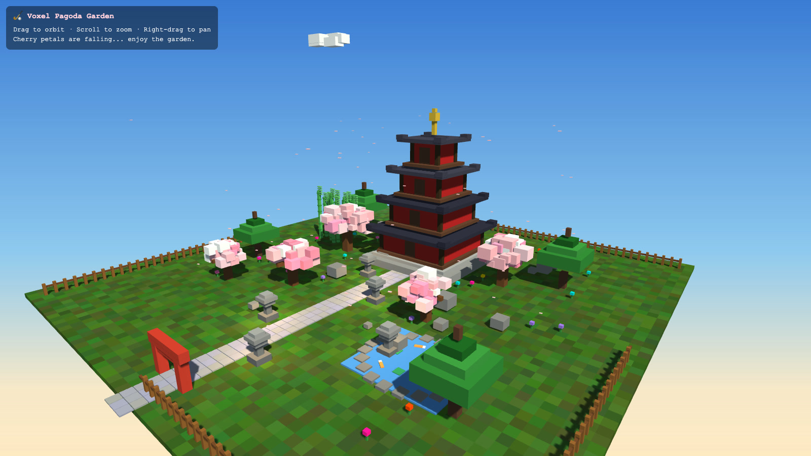

27 November 2026 · Agentic scene · voxel garden
Voxel Pagoda Garden · Ternary Bonsai 2.5 27B · Splash 1.7.3 · Pi · temperature 0
Completed in 128 s: a 14,521-byte HTML file that loads Three.js r128 and its OrbitControls from CDNs and shows a four-tier red pagoda with dark roofs and a gold finial on a stone base, pink cherry trees, green trees, bamboo, a koi pond with stepping stones, stone lanterns, a red torii, a stone path, fences, clouds and falling petals. The model wrote the whole page in its first reply.

What was checked
- Pi ended with stopReason stop after 3 requests; all 3 matched Splash Done summaries one to one.
- The model ran a JavaScript syntax check with Node on the page's script; it did not look at the page.
- Opened after the run in a Chromium-based browser pane over a local HTTP server: the scene renders with no console errors, and dragging orbits and scrolling zooms the camera. Captured again in headless Chrome 158 at 1600x900 for the run sheet.
- The archived demo is byte-identical to the file the run wrote (14,521 bytes).
Configuration
The model, serving engine and agent used for this execution.
| Field | Value | Detail |
|---|---|---|
| Model · primary | Ternary Bonsai 2.5 27B · primary · reasoning Pi medium, sent as reasoning_effort medium; Splash logged 'effort medium · thinking on' for every request, with no thinking budget | PQ2_0 GGUF, the ternary model packed in 2 bits with rotated weights (Ternary-Bonsai-2.5-27B-PQ2_0.gguf, 7,253,354,848 bytes, sha256 103a11c94324029d8bae3f8152f30bba414730064cfb77438f8589db72e1aa85), passed to Splash with --model-dir. Vision projector Ternary-Bonsai-2.5-27B-mmproj-BF16.gguf from the same revision (931,145,856 bytes, sha256 e287342d92332fa3577ed1d42e921dac9370c08da58ba9337fa450f6cc76cfd7), passed with --mmproj. |
| Checkpoint · primary | prism-ml/Ternary-Bonsai-2.5-27B-GGUF:PQ2_0 | primary model artifact · revision 28a7093cc25bc151cc2b284c5570f12ce343fdcf |
| Model · drafter | Qwen 3.8 27B DFlash2 · drafter | — |
| Checkpoint · drafter | incoai/Qwen3.8-27B-DFlash2 | drafter model artifact · revision 015e795645c74b1a0eeef3b570031fb62e769bc5 |
| Runtime | Splash 1.7.3 · Homebrew formula splash 1.7.3; the run's start script wrote `splash --version` (Splash 1.7.3) before starting it · One splash serve process started for this run by its start script and stopped after it: --model prism-ml/Ternary-Bonsai-2.5-27B-GGUF:PQ2_0 --model-dir <the cached PQ2_0 GGUF> --mmproj <the cached mmproj-BF16.gguf> --offline --no-webui --max-context 128K --idle-release off --sampling-default temperature=0; every other setting Splash's default: int8 KV cache, DFlash2 draft chosen automatically, --verify-rows auto (greedy outputs need not repeat), no thinking budget, an SSD prefix cache of temporary files (up to 14.1 GiB) that does not survive a restart, so the session started cold. Startup log: 'Ready · context 128K'; the GPU runs the prefill FFN alone (no Neural Engine split for rotated PQ2_0 weights). /v1/models listed vision and the efforts low, medium and xhigh. Warm: load and warm-up finished before the session. Splash logs no per-request temperature; the server process's command line showed --sampling-default=temperature=0.0 and Pi's model entry sets none. mode | inference engine and exact build |
| Harness | Pi coding agent 1.6.0 | the agent or client that drove the run |
| Hardware | Apple MacBook Pro · 64 GB unified memory | hardware recorded for this execution |
| Workload | Voxel Pagoda Garden · revision 1 | The same prompt as the 2026-09-29 Qwen 3.8 Flash Next run and the 2026-11-26 Hy4-Flash runs, byte for byte, sent once to Pi in print mode in a new empty folder. prompt_tokens counts every request's full prompt, cached or not. |
| Context window | 131,072 tokens | maximum context configured for the serving runtime |
| Repetitions | 1 | executions recorded for this workload; one means an indicative result, not an estimate |
Inference measurements
Engine-side rates for this run. Each figure states its own statistic; figures from different runs are not interchangeable.
| Metric | Value | Definition |
|---|---|---|
| Cache hit ratio | 94.68 % | cached input tokens / presented input tokens · n=3 · 30,688 of 32,413. |
| Decode · output-weighted | 113.54 tok/s | total output tokens / total decode time (sum of each request's output tokens / its decode rate) · n=3 · The mean of request rates weighted by output tokens is 114.43. |
| Decode · median | 94.2 tok/s | median across requests, as Splash's Done line reports it · n=3 · Range 67.3 to 116.0. |
| TTFT · median | 0.126 s | median across requests, from Splash's TTFT lines · n=3 · 3.013 s for the first request, with nothing cached; 0.126 and 0.086 s after. |
| Draft acceptance | 30.73 % | accepted DFlash2 draft tokens / drafted tokens, from Splash's /status counters before and after the session · n=3 · 11,545 accepted of 37,567 drafted. Not the same measure as the Qwen run's MTP acceptance or Hy4's DFly2 acceptance. |
| Tokens per decode cycle · drafter | 5.44 tokens/cycle | Splash's tokens per decode cycle from each Done line, weighted by output tokens · n=3 · 5.5, 4.9 and 3.5. |
Agent session counters
Agent-wide usage totals. These include reasoning, tool calls and waiting, and are not model decode speed.
| Metric | Value | Definition |
|---|---|---|
| Session elapsed | 2.1 min | Pi session start to final reply; the prompt went out at the start · n=1 |
| Model requests | 3 requests | total · n=1 |
| Tool calls | 2 calls | total · n=1 · One write of the page and one bash syntax check. |
| Context compactions | 0 compactions | total · n=1 |
| Responses stopped at the output limit | 0 requests | replies that stopped at the 16,384-token output limit · n=3 |
| Image tool calls | 0 calls | read calls that returned a screenshot of the page as an image · n=1 |
Context and token counters
Token totals as reported by the harness or engine. Cached and cumulative figures are not additive with fresh input.
| Metric | Value | Definition |
|---|---|---|
| Final prompt context | 15,519 tokens | final request · n=1 |
| Output tokens | 14,153 tokens | total of Pi's per-request output counts · n=3 · Pi counted 6,850 of them as reasoning; the first reply had 13,557 output tokens, 6,792 of them reasoning. |
Request records & provenance
Numeric per-request measurements only, matched one to one to Splash's per-request summaries by total prompt, output and cached tokens. TTFT comes from Splash's 'TTFT of request' lines and decode from its Done lines; the mtp_* fields are not used because Splash logs draft tokens per cycle, not per-request draft counts. Prompt and response content, stop reasons, session identifiers and local paths are excluded.
Run ID: 2026-11-27-ternary-bonsai-2.5-27b-splash-v173-pq2_0-pi-pagoda-garden-temp0
One execution, with checks transcribed from the retained record. A completed session is not a quality score. Measurement method · All runs